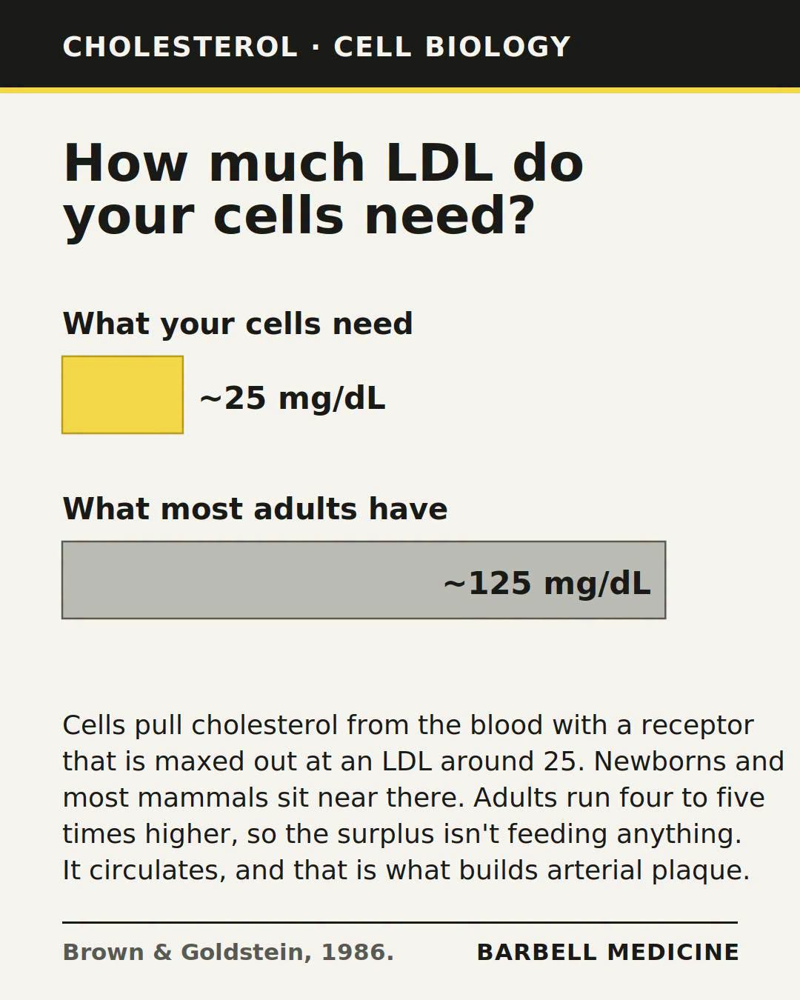

Quoted:
“You might ask, how can we be sure having low cholesterol doesn't cause harm? Timing. Some people are born with gene variants that keep their LDL low their whole lives, set at conception, long before any diet or disease could affect it. People with genetically low LDL get less heart disease.
Their cancer risk is also normal, even though people with measured low cholesterol show more cancer, which tells you the cancer itself is what lowered the cholesterol. And they live just as long as everyone else. Timing tells us low cholesterol doesn't cause these diseases.”
“In a sick, aging person, low cholesterol is just the fingerprint the disease leaves on its way out, and it doesn't help them. Lower it on purpose, through genetics, lifestyle, or medication, and heart disease risk drops in proportion to how much you lowered it.”
“What about diabetes? Genetically low LDL raises the risk of type 2 diabetes a little, and so do statins. But that risk is concentrated in people who are already on the metabolic edge, e.g. impaired fasting glucose, a large waist, high triglycerides. In the big trials, people with none of those risk factors showed essentially no added diabetes at all.”
#ushapedcurveHD #reversecausalityHD #ldlHD #cholesteroldeniersHD
Higher cholesterol is associated with less cognitive decline, fewer infections, less cancer, less heart disease, less diabetes, and a lower chance of dying. The implication here is that cholesterol is protective, and the doctors telling you to lower your cholesterol had it wrong the whole time. Every one of those associations is real, but the conclusion is still bullshit.
Most of the problem here is one of the first traps you're taught to check for in epidemiology: reverse causation. The diseases that kill people in old age, cancer, organ failure, the slow wasting of serious chronic illness, drive cholesterol down in the months and years before death. So if you measure a room full of older people once and check their cholesterol, the ones sitting at the low end are disproportionately the ones who are already sick. Follow that group and the low-cholesterol people die sooner, even though the cholesterol had nothing to do with it.
You might ask, how can we be sure having low cholesterol doesn’t cause harm? Timing. Some people are born with gene variants that keep their LDL low their whole lives, set at conception, long before any diet or disease could affect it. People with genetically low LDL get less heart disease. Their cancer risk is also normal, even though people with measured low cholesterol show more cancer, which tells you the cancer itself is what lowered the cholesterol. And they live just as long as everyone else. Timing tells us low cholesterol doesn’t cause these diseases.
This also kills the "you need cholesterol, don't lower it" worry. Every cell that needs it makes its own, and it only needs a blood LDL level of about 25 to be fully supplied by the blood. At that level the uptake machinery is already maxed out and the cell shuts down its own production. Most mammals and newborns sit right around there. Adults run four to five times higher. So at a "normal" LDL, your cells stopped needing more a long time ago. The extra just circulates, and circulating particles are what lodge in artery walls. It's why people born with very low LDL are the healthy ones and not deficient.
What about diabetes? Genetically low LDL raises the risk of type 2 diabetes a little, and so do statins. But that risk is concentrated in people who are already on the metabolic edge, e.g. impaired fasting glucose, a large waist, high triglycerides. In the big trials, people with none of those risk factors showed essentially no added diabetes at all. Lowering cholesterol, by genetics or by medication, isn't taking a metabolically healthy person and giving them diabetes. And the people who are prone to that small diabetes risk tend to be the same ones with high cholesterol and high cardiovascular risk in the first place. For them, lowering cholesterol still nets out in favor of the heart.
LDL is the main particle that carries cholesterol into your artery walls, where it builds up as plaque, though it's not the only one. What matters isn't a single reading. It's your atherogenic load: how much plaque-building cholesterol your arteries are exposed to, and for how long. Every year of higher exposure adds a little more, and it accumulates over a lifetime. More load, more disease. Pull all the evidence together, the genetics, the long-term studies, the drug trials, adding up to more than two million people, and it all points the same way. And it holds in the exact group the myth is about. A recent study of over 90,000 people on no cholesterol medication found higher LDL meant higher heart-attack risk at every age. So much for high cholesterol being protective.
But "most heart attacks happen in people with normal cholesterol" is another claim that snags smart people. It's true, but it doesn’t mean cholesterol is irrelevant. Most people have roughly normal cholesterol, so most of everything happens to them, heart attacks, weddings, parking tickets. That doesn't make normal cholesterol protective of the heart any more than it makes normal cholesterol cause parking tickets. Per person, the risk still climbs with the load. (Wedding data still pending)
Cholesterol skeptics do another thing that’s interesting. They readily accept every other risk factor that drives disease the same way cholesterol does, your blood pressure, whether you smoke, your blood sugar, your body fat. All of them raise risk in proportion to how high they run and how long. But cholesterol, somehow, gets a pass. "Nah, bro, cholesterol is chill." Make it make sense.
Low cholesterol is generally better, but it matters how you got there. In a sick, aging person, low cholesterol is just the fingerprint the disease leaves on its way out, and it doesn't help them. Lower it on purpose, through genetics, lifestyle, or medication, and heart disease risk drops in proportion to how much you lowered it.

